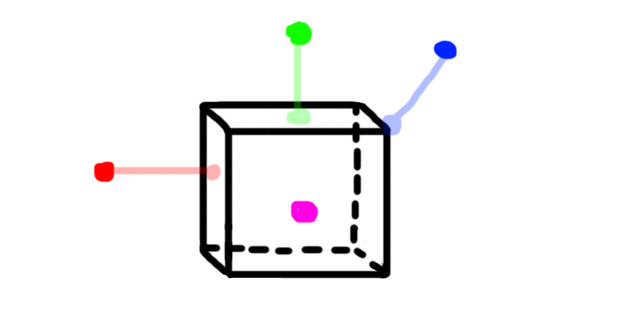
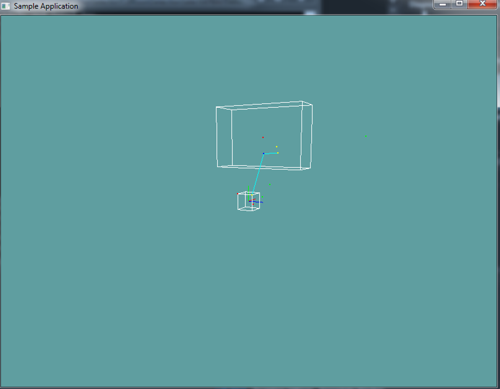

Closest point on AABB
Finding the closest point on a plane is not too difficult. Consider the following image:

The red, green and blue dots are outside the AABB, the closest point to them on the AABB is shown in a transparent projection. The purple dot is INSIDE the aabb. The closest point to the purple one is its-self.
Given that image, can you figure out the rules of the closest point?
The algorithm
To find the closest point on an AABB, we just clamp the X, Y and Z positions of the point to the AABB! Consider the following if sequence for the X axis test:
- If point.X > aabb.max.X
- Set result.X = aabb.max.X
- Else if point.X < aabb.min.X
- Set result.X = aabb.min.X
- Else
- Set result.X = point.X
You might have noticed something odd, if the point is outside the min or max x it is clamped to either the min or max. This puts the point on the edge of the AABB. But if the test point is inside of the aabb, it is not clamped to an edge, rather it just returns the test point's position (on the axis being tested).
This might sound like a bug at first, but it's not. In order to use the closest-point algorithm, we need the closest point to be inside the volume sometimes.
On Your Own
Add the following function to the Collisions class:
public static Point ClosestPoint(AABB aabb, Point point)
And provide an implementation for it!
Unit Test
You can Download the samples for this chapter to see if your result looks like the unit test.
If you comment out the update function, your image should look like the one attached. The constructor only checks for one

using OpenTK.Graphics.OpenGL;
using Math_Implementation;
using CollisionDetectionSelector.Primitives;
namespace CollisionDetectionSelector.Samples {
class AABBPointSample : Application {
protected Vector3 cameraAngle = new Vector3(120.0f, -10f, 20.0f);
protected float rads = (float)(System.Math.PI / 180.0f);
AABB[] testAABBs = new AABB[] {
new AABB(new Point(2f, 4f, 0f), new Vector3(1f, 2f, 3f)),
new AABB(new Point(-0.5f, -0.5f, -0.5f), new Point(0.5f, 0.5f, 0.5f))
};
Point[] testPoints = new Point[] {
new Point(0.2f, -0.2f, 0.2f),
new Point(1f, 1f, 1f),
new Point(-0.5f, 0.5f, -0.5f),
new Point(2f, 4f, 0f),
new Point(2f, 0f, 0f),
new Point(2f, 4f, 6.5f),
};
Point farPoint = new Point(-1f, 3f, 1.5f);
Point secondFarPoint = new Point(2f, 3.4f, 1f);
public override void Intialize(int width, int height) {
// Seeing the back face of a square gives a better
// overview of the actual geometry
//GL.Enable(EnableCap.CullFace);
GL.PolygonMode(MaterialFace.FrontAndBack, PolygonMode.Line);
GL.PointSize(2f);
Point closest = Collisions.ClosestPoint(testAABBs[0], secondFarPoint);
if (closest.ToVector() != new Vector3(2f, 3.4f, 1f)) {
System.Console.ForegroundColor = System.ConsoleColor.Red;
}
System.Console.WriteLine("closest: " + closest + " / 2, 3.4, 1");
System.Console.ResetColor();
}
public override void Render() {
Vector3 eyePos = new Vector3();
eyePos.X = cameraAngle.Z * -(float)System.Math.Sin(cameraAngle.X * rads * (float)System.Math.Cos(cameraAngle.Y * rads));
eyePos.Y = cameraAngle.Z * -(float)System.Math.Sin(cameraAngle.Y * rads);
eyePos.Z = -cameraAngle.Z * (float)System.Math.Cos(cameraAngle.X * rads * (float)System.Math.Cos(cameraAngle.Y * rads));
Matrix4 lookAt = Matrix4.LookAt(eyePos, new Vector3(0.0f, 0.0f, 0.0f), new Vector3(0.0f, 1.0f, 0.0f));
GL.LoadMatrix(Matrix4.Transpose(lookAt).Matrix);
DrawOrigin();
GL.Color3(1f, 1f, 1f);
foreach(AABB aabb in testAABBs) {
aabb.Render();
}
foreach (Point point in testPoints) {
bool collides = false;
foreach (AABB aabb in testAABBs) {
if (Collisions.PointInAABB(aabb, point)) {
collides = true;
break;
}
}
if (collides) {
GL.Color3(1f, 0f, 0f);
}
else {
GL.Color3(0f, 1f, 0f);
}
point.Render();
}
Point closest;
foreach (AABB aabb in testAABBs) {
closest = Collisions.ClosestPoint(aabb, farPoint);
GL.Color3(0f, 1f, 1f);
GL.Begin(PrimitiveType.Lines);
GL.Vertex3(closest.X, closest.Y, closest.Z);
GL.Vertex3(farPoint.X, farPoint.Y, farPoint.Z);
GL.End();
GL.Color3(1f, 1f, 0f);
closest.Render();
}
GL.Color3(0f, 0f, 1f);
farPoint.Render();
secondFarPoint.Render();
closest = Collisions.ClosestPoint(testAABBs[0], secondFarPoint);
GL.Color3(0f, 1f, 1f);
GL.Begin(PrimitiveType.Lines);
GL.Vertex3(closest.X, closest.Y, closest.Z);
GL.Vertex3(secondFarPoint.X, secondFarPoint.Y, secondFarPoint.Z);
GL.End();
GL.Color3(1f, 1f, 0f);
closest.Render();
}
public override void Update(float deltaTime) {
cameraAngle.X += 45.0f * deltaTime;
}
protected void DrawOrigin() {
GL.Begin(PrimitiveType.Lines);
GL.Color3(1f, 0f, 0f);
GL.Vertex3(0f, 0f, 0f);
GL.Vertex3(1f, 0f, 0f);
GL.Color3(0f, 1f, 0f);
GL.Vertex3(0f, 0f, 0f);
GL.Vertex3(0f, 1f, 0f);
GL.Color3(0f, 0f, 1f);
GL.Vertex3(0f, 0f, 0f);
GL.Vertex3(0f, 0f, 1f);
GL.End();
}
public override void Resize(int width, int height) {
GL.Viewport(0, 0, width, height);
GL.MatrixMode(MatrixMode.Projection);
float aspect = (float)width / (float)height;
Matrix4 perspective = Matrix4.Perspective(60, aspect, 0.01f, 1000.0f);
GL.LoadMatrix(Matrix4.Transpose(perspective).Matrix);
GL.MatrixMode(MatrixMode.Modelview);
GL.LoadIdentity();
}
}
}